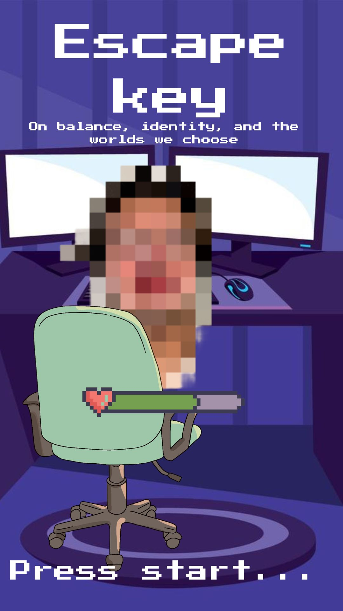
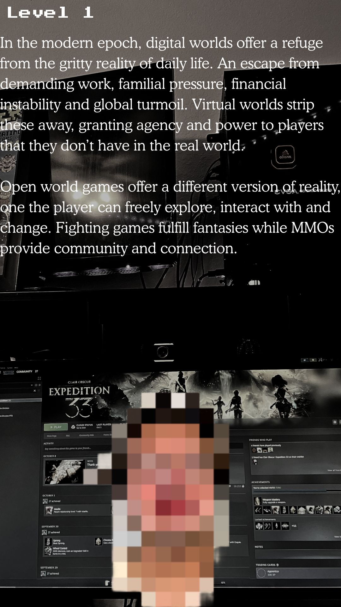
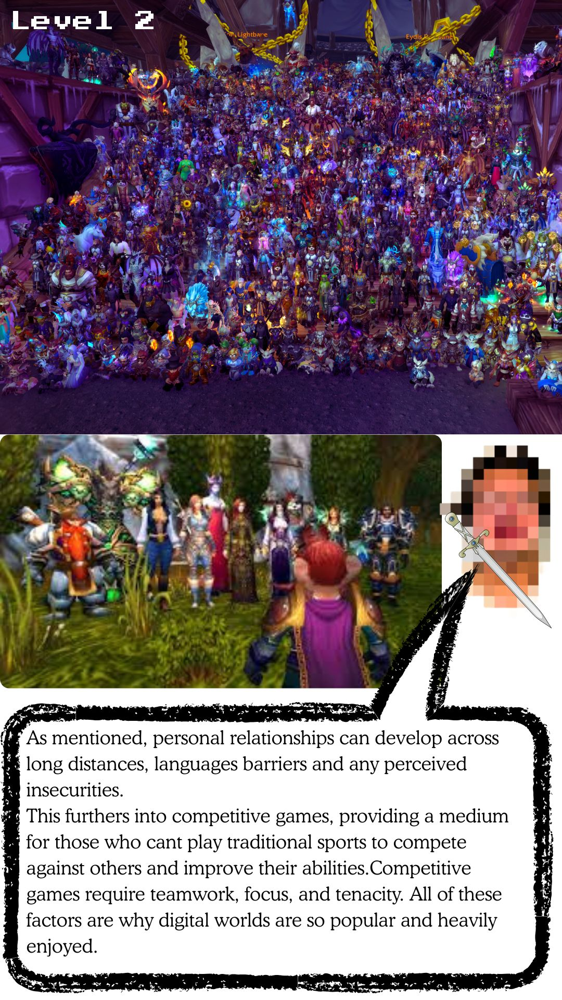
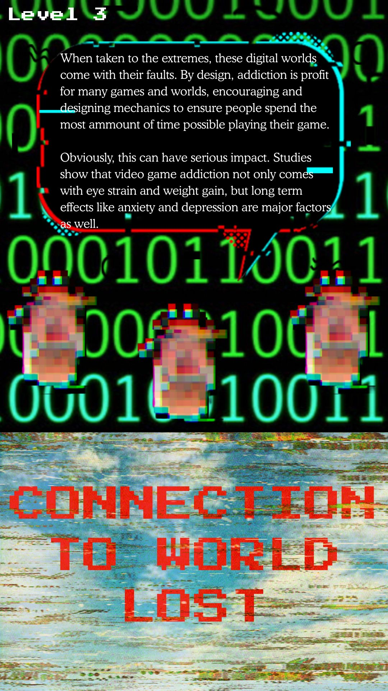
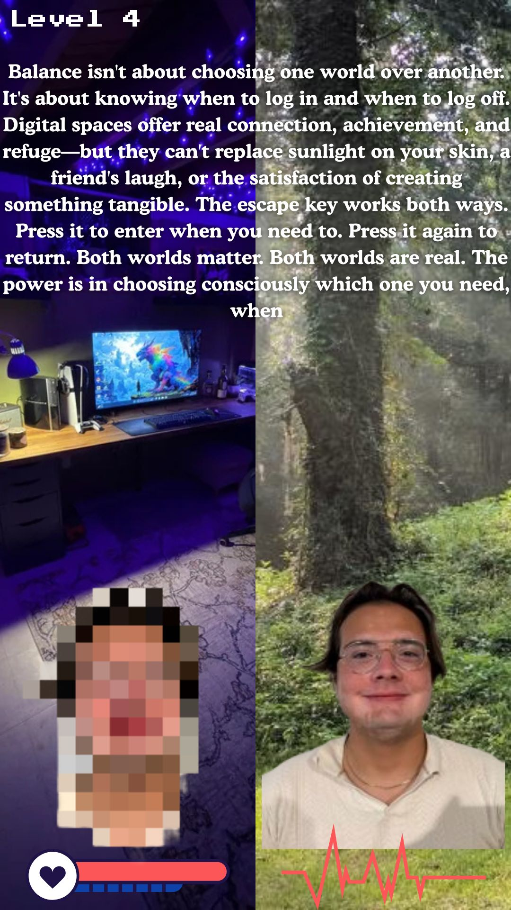

Assignment 03
Zine
DIY publishing and visual rhetoric in compact form
Project Overview
My pixel art zine explores the tension between escapism and reality through the lens of video game addiction. Created in a compact, DIY format, this zine uses visual rhetoric and personal narrative to make readers feel the emotional weight of losing oneself in digital worlds.
The Zine
This pixel art zine tells a visual story about the experience of video game addiction and the struggle between digital escapism and real-world connection. Each page uses minimalist pixel art to convey the emotional journey.
Page 1
Page 2 - Level 1
Page 3 - Level 2
Page 4 - Level 3
Page 5 - Level 4
Creative Approach
My zine Escape Key explores digital escapism through balanced perspective, employing creative and rhetorical techniques to showcase the positives and negatives of video games and digital realities. Escape Key combines text, image and design to create an argument for the balance between these two worlds, being born from my own experience with digital escapism and personal journey towards this equilibrium.
Visual Rhetoric in Detail
Specifically, pages 4 and 5 will be analyzed in detail, investigating how the visual rhetoric reflects the content and purpose of the page. The internet, and specifically video games, provide a necessary refuge from modern life's pressures, but sustainable escapism requires disciplined navigation between virtual enrichment and physical presence.